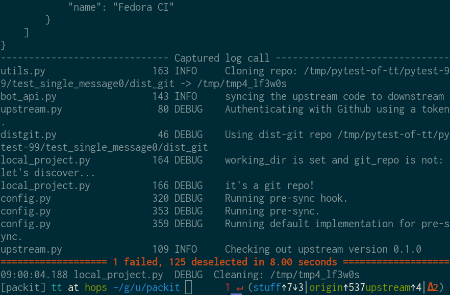
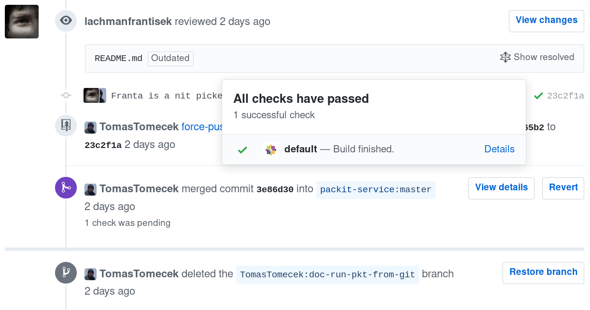
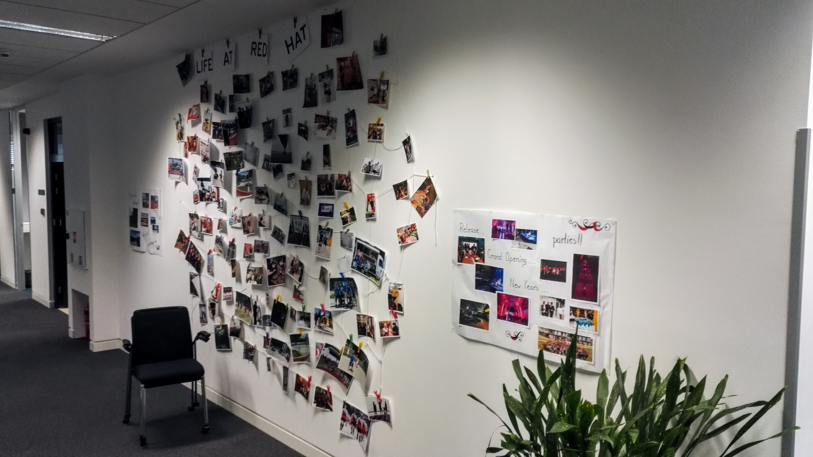

class: center, middle # What is a developer career like? ## Tomas Tomecek --- # `/who Tomáš Tomeček` -- * Principal Software Engineer @ Red Hat * Tech lead * RHEL and Fedora * Containers, automation and integration * I ❤ open source --- class: center, middle # So, how does your day look like? --- # Roles -- * Software Engineer -- * QA Engineer -- * DevOps -- * Support team and Technical writers -- * Program manager, Product manager * Security engineer, Release engineer * Manager * People, finance, facilities --- class: center, middle # Can we talk about the day now? --- # Yes, but... * These roles have in common: -- * English -- * E-mails -- * Being responsive -- * Communication -- * Being a detective -- * Collaboration -- * Meetings --- class: center, middle # That was so boring! -- # Please, talk about developers now! --- # My developer day --  --- # My developer day  --- # My developer day  --- # My developer day * What's the architecture? * How will it work? --- # So, are we all just nerds? --  --- # Nope!  --- # Fun! * Conferences * Team buildings * Dinners & parties * Sport * Travel * Hobbies --- # Flock 2016 in Krakow  --- # How can I become an intern at Red Hat then? * Be active. * Learn basics. * Choose your path. * Engage. -- * OSC, GSoC --- class: center, middle # Come visit team Cyborg at Francium (1st floor) and learn more! --- # Thanks for coming! * <span class="fa fa-github-square"></span> [github.com/TomasTomecek/speaks](https://github.com/TomasTomecek/speaks) * <span class="fa fa-twitter-square"></span> [@TomasTomec](https://twitter.com/TomasTomec) * <span class="fa fa-globe"></span> [blog.tomecek.net](https://blog.tomecek.net/)